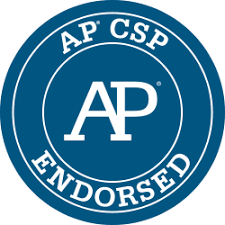
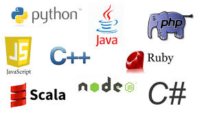

The website you are viewing is the online portfolio of Jhass Theisen. This website acts as a library of the information and values learned amidst his time in Ms.Traub's AP Computer Science Principles Class. Everything on this website was designed and put together by him, and any assets for embedding and other systems was open sourced information. Other wise there are multiple pages of information detailing all the intricacies of Computer Science.
AP Computer Science Principles offers a multidisciplinary approach to teaching the underlying principles of computation. The course will introduce students to the creative aspects of programming, abstractions, algorithms, large data sets, the Internet, cybersecurity concerns, and computing impacts. AP Computer Science Principles also gives students the opportunity to use current technologies to create computational artifacts for both self-expression and problem solving. Together, these aspects of the course make up a rigorous and rich curriculum that aims to broaden participation in computer science. (https://apcentral.collegeboard.org/courses/ap-computer-science-principles/course)
There are various Programming Languages proposed in our Computer Science Principles class, the most prevalent ones being Python, Scratch, HTML, and Java. These were periodically implemented into our learning schedule and assignments throughout the year. The most comfortable ones for me ended up being scratch and HTML, as I was not only able to find them simple and intuitive to use/create projects with, but also used them in most of my projects, including the one you are seeing right now.
